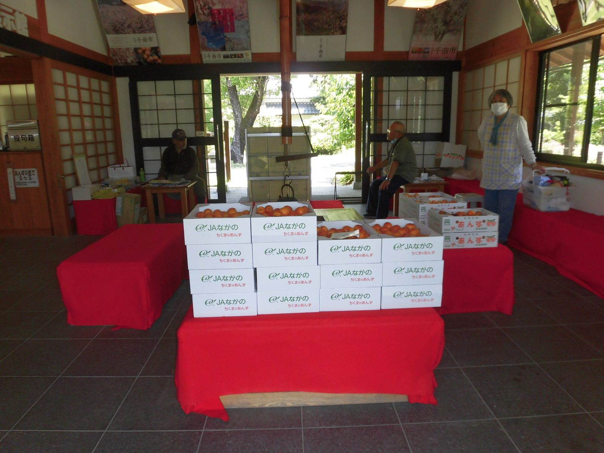

0.0%
食品が“ネットで”買われる割合は、たった、これだけ。
裏を返せば、95%以上は今も「対面」で選ばれている。だからこそ、食べて納得してもらう現場が、いちばんの突破口になる。
Source — 食品EC化率（オフライン購買比率）
On the ground 現場の記録
産地に、足を運ぶ。
長野県千曲市・工房アプリコの現場で。収穫から加工、出荷まで、つくり手の隣で見て、確かめています。



Why us 学生団体だからこそ
信用は、言葉ではなく
仕組みでつくる。
委託ではなく買取で仕入れ、売れ残りのリスクは私たちが負う。学生団体の弱点とされる「信用」を、責任の明文化で武器に変えます。
買買取で仕入れる
委託でなく事前買い取り。売れ残りは私たちが負担。
温温度を記録する
冷蔵10℃・冷凍-15℃以下を実測ログで管理。
備備えて対応する
PL保険を検討中。クレーム一次対応も整備。
返データで返す
売上・反応を簡易レポートにして還元。